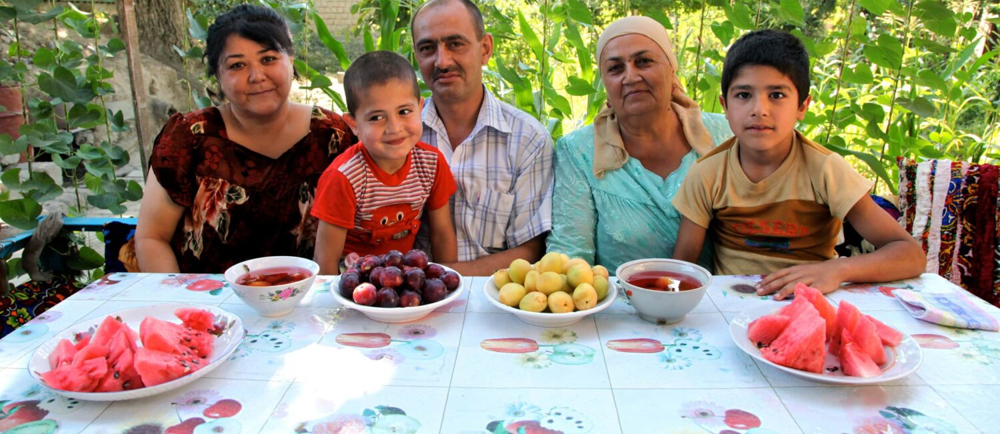
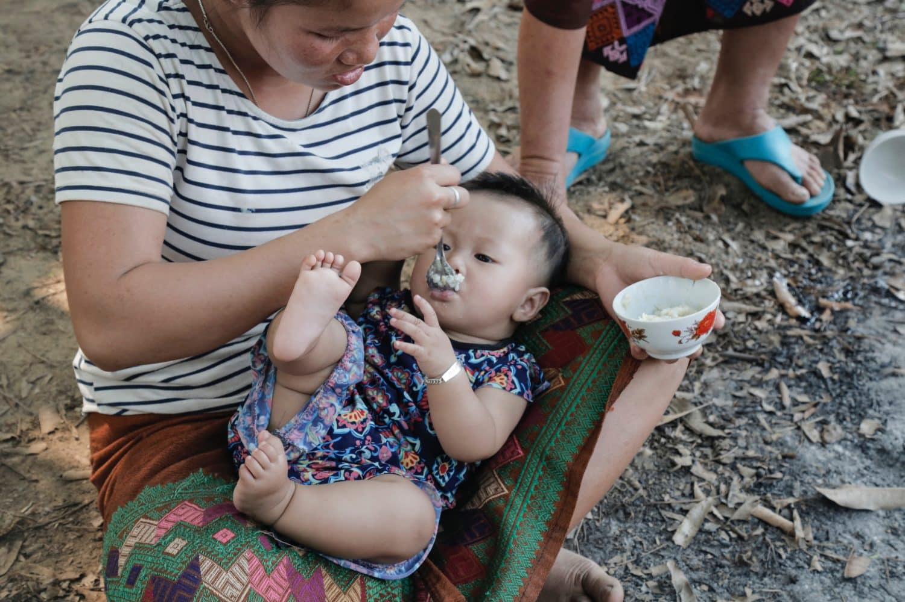
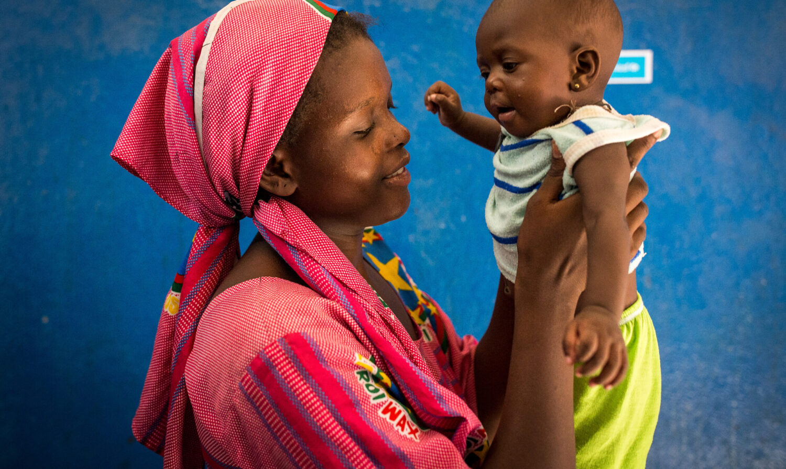

Peran Gizi dalam Kesehatan Anak

Gizi yang seimbang sangat penting bagi pertumbuhan dan perkembangan anak-anak. Nutrisi yang cukup membantu memastikan bahwa anak-anak memiliki energi yang dibutuhkan untuk bermain, belajar, dan tumbuh dengan baik. Beberapa nutrisi penting untuk kesehatan anak meliputi:
- Protein: Membantu pertumbuhan dan perkembangan otot dan jaringan tubuh.
- Karbohidrat: Sumber energi utama untuk aktivitas sehari-hari.
- Lemak: Penting untuk perkembangan otak dan penyerapan beberapa vitamin.
- Vitamin dan mineral: Memainkan peran penting dalam fungsi tubuh yang sehat.
Sebagai orang tua, penting untuk memastikan anak-anak Anda mendapatkan makanan yang seimbang dan bergizi setiap hari. Juga, pastikan anak-anak Anda cukup minum air dan menjaga pola makan yang sehat untuk mendukung kesehatan mereka.
Makanan Sehat untuk Anak
Ada beberapa makanan sehat yang dapat Anda sertakan dalam diet anak-anak untuk mendukung pertumbuhan dan kesehatan mereka:
- Buah-buahan dan sayuran segar: Sumber vitamin, mineral, dan serat yang penting.
- Sumber protein sehat seperti ikan, daging tanpa lemak, telur, dan produk susu rendah lemak.
- Biji-bijian utuh dan sereal dengan serat tinggi untuk energi bertahap.
- Minyak sehat seperti minyak zaitun atau minyak biji rami.
- Hindari makanan tinggi gula, makanan cepat saji, dan makanan olahan yang kurang bergizi.
Ingatlah bahwa mendidik anak-anak tentang pentingnya makan sehat juga merupakan bagian penting dari mempromosikan gaya hidup yang sehat. Melibatkan mereka dalam memilih makanan, memasak bersama, dan memberikan contoh dengan memakan makanan sehat dapat membantu mereka mengembangkan kebiasaan yang baik.
Terakhir, pastikan anak Anda memiliki waktu yang cukup untuk bermain dan beraktivitas fisik. Aktivitas fisik juga merupakan komponen penting dalam pertumbuhan dan kesehatan anak-anak.
Artikel Gizi UNICEF
Berikut adalah beberapa artikel mengenai gizi untuk anak-anak:
  Data Gizi Anak Usia Dini
Data pengukuran bayi menurut Oktober 2023
| No | Nama Anak | Tanggal Lahir | Jenis Kelamin | Berat Badan (kg) | Tinggi Badan (cm) | Tanggal Pengukuran | Berat Badan Ideal (kg) | Status Gizi |
|---|---|---|---|---|---|---|---|---|
| 1 | Kenzo Wynter | 01/01/2018 | Laki-laki | 15 | 90 | 01/10/2023 | 18 | Normal |
| 2 | Allyn | 03/05/2019 | Perempuan | 12 | 85 | 01/10/2023 | 15 | Gizi Kurang |
| 3 | Diego S Emilo | 06/12/2020 | Laki-laki | 10 | 80 | 01/10/2023 | 12 | Gizi Buruk |
| 4 | Kharisma Singht | 09/20/2021 | Perempuan | 11 | 88 | 01/10/2023 | 14 | Kurang Gizi |
Data pengukuran bayi menurut November 2023
| No | Nama Anak | Tanggal Lahir | Jenis Kelamin | Berat Badan (kg) | Tinggi Badan (cm) | Tanggal Pengukuran | Berat Badan Ideal (kg) | Status Gizi |
|---|---|---|---|---|---|---|---|---|
| 1 | Emma Johnson | 01/03/2019 | Perempuan | 14 | 90 | 12/11/2023 | 14 | Normal |
| 2 | Liam Anderson | 03/10/2019 | Laki-laki | 12 | 85 | 12/11/2023 | 12 | Normal |
| 3 | Sophia Miller | 06/12/2020 | Perempuan | 10 | 80 | 12/11/2023 | 15 | Gizi Buruk |
| 4 | Noah Taylor | 09/01/2021 | Laki-laki | 16 | 85 | 12/11/2023 | 17 | Kurang Gizi |